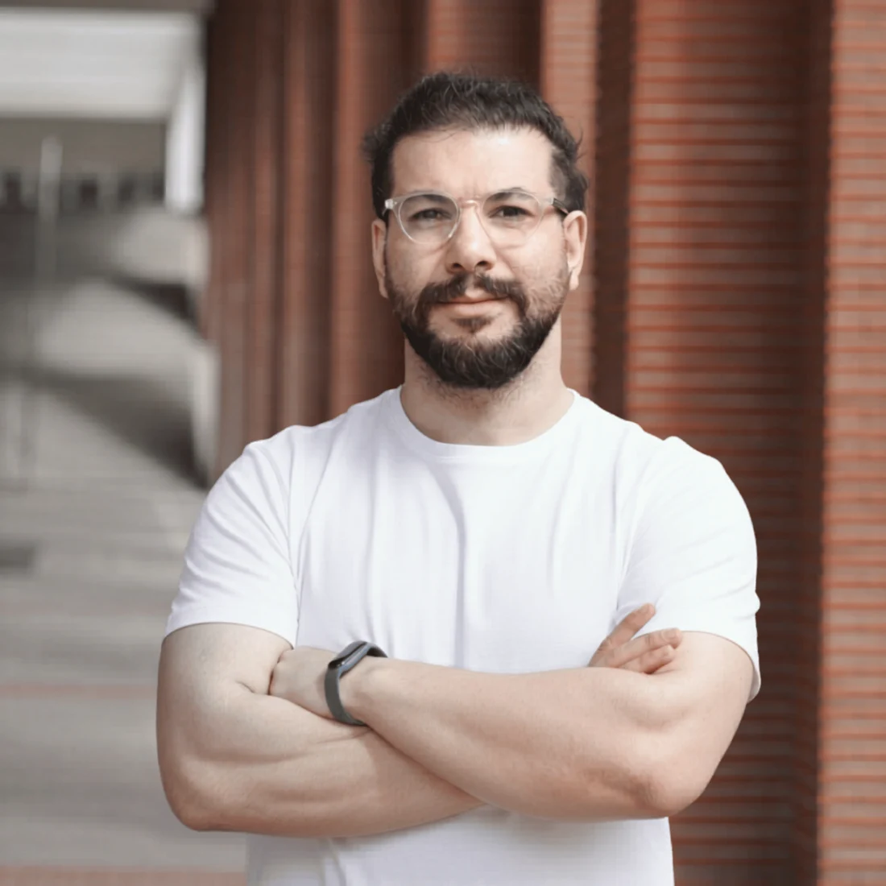
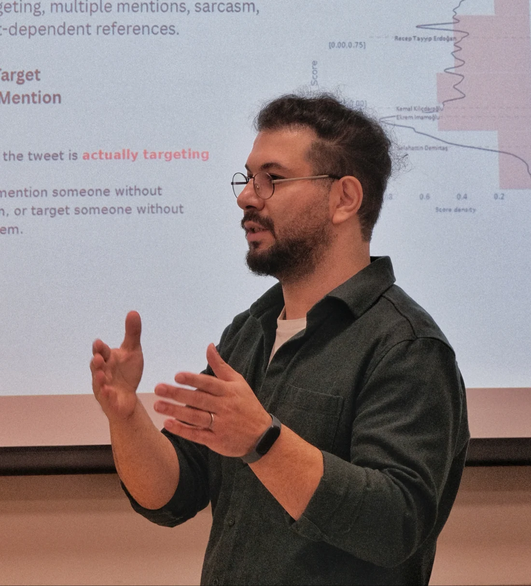

Elections & digital behavior
Political discourse, attention to candidates, sentiment, and behavioral shifts across electoral periods.
Computational social scientist.
Communication strategist.
Digital narrative designer.

PhD Candidate · Computational Social Science · Sabancı University
Election analysis on social media and science communication
I am a PhD candidate in Computer Science and Engineering at Sabancı University and a graduate research assistant at VRL Lab, supervised by Dr. Onur Varol. My work lies at the intersection of computational social science, social media analytics, network analysis, simulation, and data visualization. I study political discourse, agenda-setting dynamics, coordinated activity, and the structure of online behavior.
I am a professional social media strategist, narrative designer, and digital communicator, with a strong ability to identify, shape, and communicate value. My work focuses on translating complex research, cultural narratives, and ideas into clear, engaging, and meaningful digital experiences that resonate with diverse audiences.
I am a PhD candidate in Computer Science and Engineering at Sabancı University. These are the research projects I have contributed to as a graduate research assistant at VRL Lab.
Modeling following motivations and agenda-setting strategies on social networks.
Systems for detecting coordination and automated behavior in online social networks.
Political discourse, attention to candidates, sentiment, and behavioral shifts across electoral periods.
Retweet, mention, and interaction networks as a lens on group structure, coordinated activity, and ideological segmentation.
Agenda setting, opinion dynamics, and mixed human–AI interaction explored through computational models.
I work on how research and cultural subjects are presented online: what to explain, how to structure it, and which visual form to use.
Discuss a projectWriting and designing explanations of scientific work for people outside the field, with attention to the evidence and its limits.
Developing messages, content plans, and social media strategies around a subject and the people they need to reach.
Developing story structure, visual style, and interaction for digital narratives, including stories based on data.
Two projects I led: a data-driven story about political following and a digital exhibition about Nowruz. Both were co-created with AI.
A digital story exploring follow events around two politicians in Turkey. I led the analysis behind the story and shaped its narrative, visual style, and creative direction.
Enter the narrativeA digital exhibition about Nowruz, drawing on my own cultural background. I led the project and co-created it with AI.
Visit the exhibition
Books I have read or plan to read, a network visualization tool, and code from my projects.
Reading & influencesMy bookshelfTools & experiments3D network studioCode & explorationOn GitHubFor research collaborations, science communication,
and digital narrative projects.